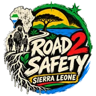
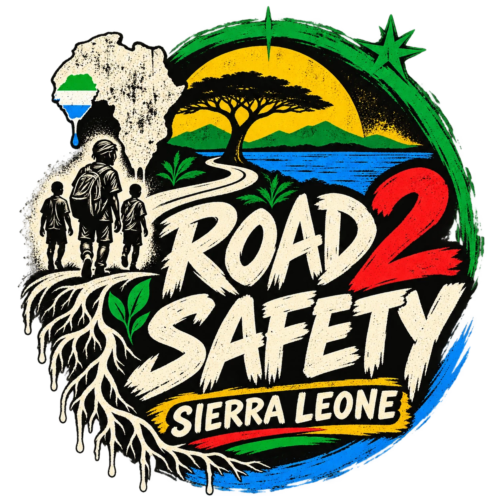

PROTECT LIFE
Connect people and families with clear routes towards care and support.

ROAD 2 SAFETYINTERNATIONAL · SIERRA LEONETHE KUSH CRISIS NEEDS A HUMAN RESPONSE
Behind every crisis is a person. Behind every recovery is a community. We’re building the connections between care, recovery and a future with purpose.
Road 2 Safety International is in formation as a UK Community Interest Company.


ROOTED IN SIERRA LEONE
OUR PEOPLE.
OUR LAND.
OUR FUTURE.
01 / THE MISSION
Care, dignity and informed choice belong at the centre of the response to Sierra Leone’s Kush crisis.
Our proposed model follows the whole journey: street contact, listening, referral, follow-up and reintegration. The difficult gaps between those steps are where we intend to work.
Read our principlesConnect people and families with clear routes towards care and support.
Build follow-through between referral, treatment, home and longer-term recovery.
Put skills, livelihoods, family and belonging back into the picture.

02 / THE WORK AHEAD
A connected response needs practical support on the ground and serious questions further up the chain.
ROAD 2 SAFETY CORE
Navigation, referral follow-through, recovery support and community reintegration.
02PLASTIC 2 PURPOSE
A proposed route into skills, local production and livelihoods. Partnerships and delivery remain in development.
03SCIENCE & RECOVERY RESEARCH
Toxicology and potential recovery research, including Iboga questions, with ethics, qualified institutions and community voices.
04SYSTEMS & ACCOUNTABILITY
Ask clear questions about supply, finance, institutional capacity and reinvestment in recovery.
Research questions are separate from treatment claims. Proposed programmes are subject to the partnerships, permissions and safeguards needed for delivery.
 FREETOWN / SIERRA LEONE · ARCHIVE, 2014
FREETOWN / SIERRA LEONE · ARCHIVE, 201404 / COMMUNITY CONSULTATION
This is the pre-launch stage. The wider community’s questions, lived experience and ideas should help shape what comes next.
OPEN PROJECT MATERIALS
Explore the foundations behind the project and bring an informed challenge.
BUILD WITH US
Recovery, research, engineering, governance, community and institutional enquiries are welcome.
Please do not email medical records or confidential case histories.